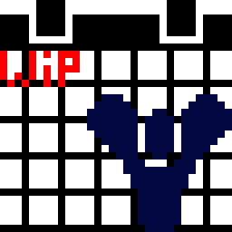

My Projects
WIP - DestinyCalendarAn attempt to show all the rotations, events, and other calendar-able things of Destiny. |
 |
SubclassCommandsExecutes user-specified commands based on their currently equipped Destiny 2 subclass. |
|
This very websiteWritten from the ground up for practice/messing around with HTML/CSS/JS. Source visible here |
|
MQTTHardwareInfoTransmits computer sensor data gathered using OpenHardwareMonitorLib.dll over MQTT. |
Uh, I don't really have an image for this. Have a smile. :) |
Projects I contribute(d) to
Restiny
This is a very early version of what will hopefully be a somewhat comprehensive and useful gem to interact with Bungie's Destiny 2 API. It's currently somewhat useable! Contributions are very welcome! |
No image... yet. |